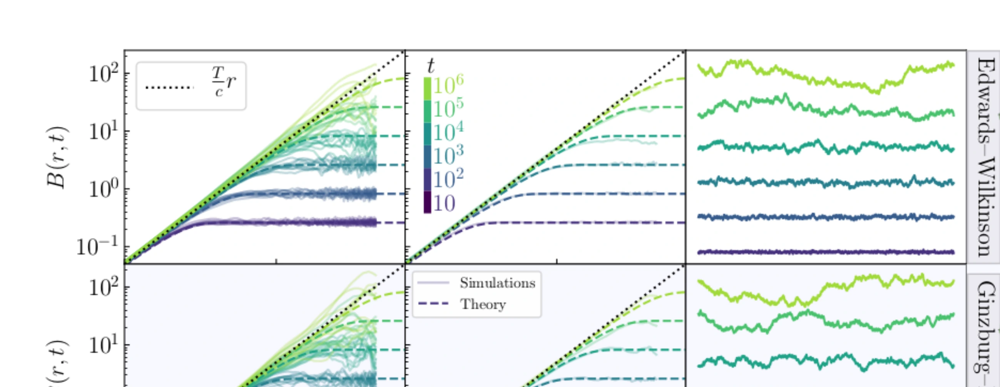
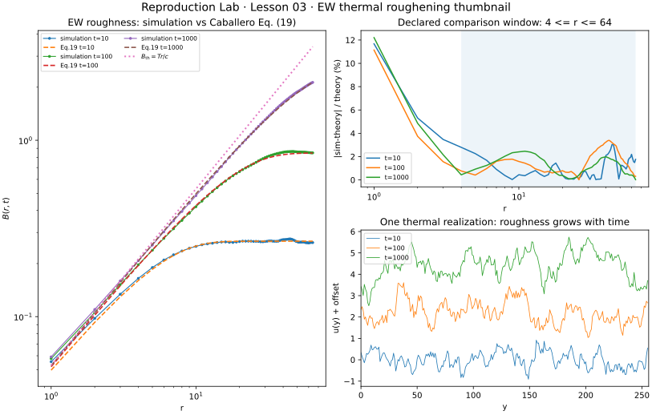

第一次真正复现论文曲线：thermal roughness（热粗糙度）为什么从 0 长出来？
前两课都还是 已知答案测试：先验证 畴壁剖面，再验证 畴壁提取器。现在第一次进入 Caballero 2020 的定量主结果。论文 Fig.2 从完全平的 interface 出发，让 thermal noise（热噪声） 逐步建立几何相关，并把数值 B(r,t) 与解析 Eq. (19) 直接比较。我们先只复现其中最干净的 1D Edwards–Wilkinson 层，因为这里既有论文 Figure，也有 精确解析基准。
0 · 原论文 Fig.2 与我们的缩略复现

上排是 1D Edwards–Wilkinson，下排是 2D Ginzburg–Landau。作者从 平直界面 出发，在 t=10j, j=1…6 观察 B(r,t)，彩色虚线是 Eq. (19)，黑色点线是 长时热粗糙度 Tr/c。

只取 t=10,100,1000，实线/点是数值模拟，虚线是论文 Eq. (19)。右上直接画 相对误差；右下展示同一独立热噪声样本随时间逐渐粗糙化。
1 · 先把 论文方案 写下来，防止偷偷改题
| 项目 | Caballero 2020 | 本课 | 为什么不同 |
|---|---|---|---|
| 模型 | 1D Edwards–Wilkinson Eq. (15) | 相同 | 这一层先不碰 2D GL |
| 映射参数 | α=δ=γ=η=1 → η̃=c=2√2/3 | 相同 | 直接用论文 Eq. (16) |
| 温度 | T=0.05 | T=0.05 | 相同 |
| 线长 | L=4096，dy=1 | N=256，dy=1 | 先做 CPU 快速缩略复现 |
| 时间步长 | Δt=10−2 | Δt=0.1 | 更粗，但必须被 Eq.19 误差验收条件 约束 |
| 时刻 | 10,10²,…,10⁶ | 10,100,1000 | 避免为了“完整”先跑长时大系统 |
| 独立样本数 | 10 | 64 | 1D 很便宜，多取样降低 Monte Carlo（蒙特卡洛）采样噪声；因此不是 方案参数完全一致 |
2 · Eq. (15)：这次第一次真的加 thermal noise（热噪声）
论文通过 bulk-to-line projection（体场到界面线投影） 得到这条 EW 方程。α=δ=γ=η=1 时，Eq. (16) 给出 η̃=c=2√2/3，因此 扩散比 c/η̃=1。离散到 dy、dt 后，每一步直接加到 u 的 热噪声增量 是：
3 · Eq. (19)：为什么这篇特别适合拿来学代码？
因为它不仅给模型，还给了 平直初态 下 B(r,t) 的解析答案。令：
而长时间极限进一步变成：
所以这一课至少有两道独立标尺：完整 Eq.19 检查 finite-time crossover（有限时间交叉），Tr/c 检查 长时短尺度热区间。
4 · 从连续 Langevin 到 6 行 Euler
lap = (np.roll(u,-1,axis=1)
- 2*u
+ np.roll(u,1,axis=1)) / dy**2
u += dt * (c/eta_tilde) * lap
u += np.sqrt(2*T*dt/(eta_tilde*dy)) * rng.standard_normal(u.shape)这里每一行都有可核验含义：periodic Laplacian（周期拉普拉斯算子） 对应 界面线弹性；第二行是 确定性弛豫；第三行来自论文 Eq. (14–15) 的 FDT noise（涨落耗散噪声）。没有额外“调出来的”噪声幅度。
5 · B(r,t) 不是拿一条 interface 就结束
本课括号里同时平均 y 和 independent thermal 独立样本数。论文 Fig.2 左列展示 10 条 独立样本 的离散程度，中列再画平均值。我们为了快速降低 Monte Carlo（蒙特卡洛）采样噪声 用 64 独立样本数，但最终 统计单位 仍然是 独立样本，不是 r 分箱。
6 · 硬性验收：先冻结比较区间，再算误差
最靠近 晶格尺度 的 r 会受离散 Laplacian 影响；接近 L/2 又会开始感受到 有限尺寸 / 周期边界效应。因此在看结果前，我们声明：
| time | median 相对误差 | RMS 相对误差 | max 相对误差 | 判定 |
|---|---|---|---|---|
| t=10 | 0.91% | 1.36% | 3.04% | 通过 |
| t=100 | 1.39% | 1.86% | 3.40% | 通过 |
| t=1000 | 1.02% | 1.33% | 2.46% | 通过 |
另外，t=1000 时 r=2…10 的平均 B/(Tr/c)=0.9592，也已经接近 长时热斜率。
7 · 完整脚本
打开第 03 课 Python 脚本 → 依赖仍然只有 NumPy + Matplotlib；普通 CPU 约十秒级。
eta_tilde = c = 0.942809042 T = 0.050 N, realizations = 256, 64 dy, dt = 1.000, 0.100 t= 10.0: median rel err=0.91% rms=1.36% max=3.04% t= 100.0: median rel err=1.39% rms=1.86% max=3.40% t=1000.0: median rel err=1.02% rms=1.33% max=2.46% late B/(Tr/c), r=2..10 = 0.9592 ALL THUMBNAIL GATES PASS
8 · 为什么还没跑 2D GL？
先验估计量
EW + Eq.19 先证明 B(r,t) 实现 和 thermal FDT 没问题。
再测模型约化
下一课把同一 T、同一 映射参数 放回 2D GL，才是在检验 体场→界面线映射。
算力可分层
如果 GL 小系统偏离，我们能区分是 求解器/噪声 错，还是 有限畴壁宽度 / 体场涨落 引起。